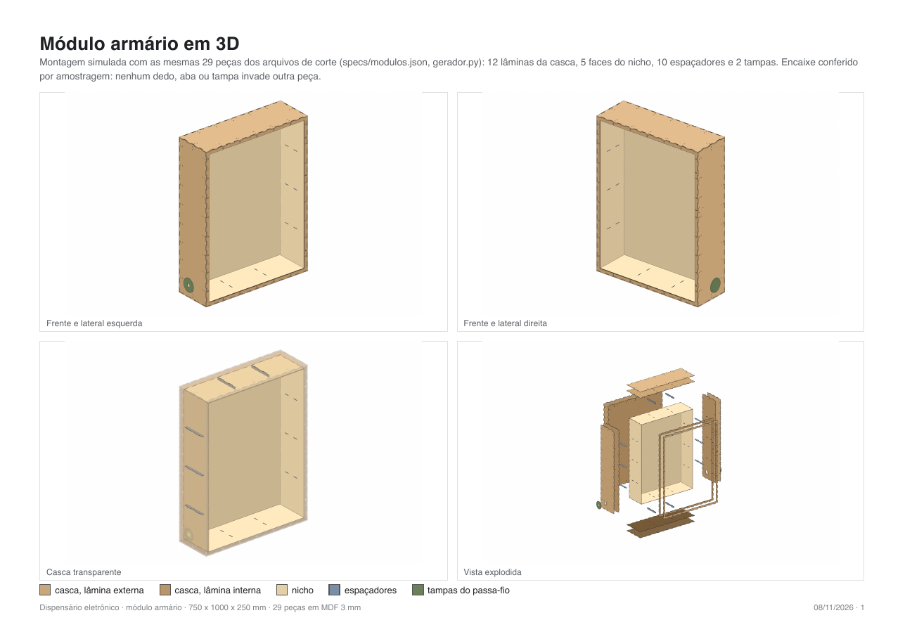
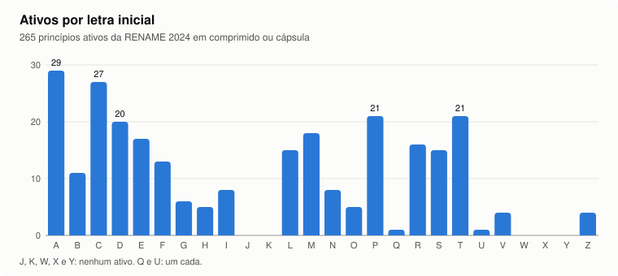

A linguagem construtiva
Regras que valem para todas as peças.
Lâmina dupla
Cada parede é um sanduíche de duas chapas de 3 mm, 6 mm no total. A externa e a interna são peças separadas, o que deixa esconder porcas, rebaixos e passagens de fio entre elas.Enforca-gato no lugar de parafuso
As faces se unem por abraçadeiras de nylon de 4,8 mm que laçam os cantos por rasgos de 6,5 x 2,5 mm. Desmonta com um alicate, sem ferramenta especial, e não depende de rosca no MDF.Dedos nas arestas
As seis faces se encaixam por juntas de dedos geradas pela matriz do TabbedBoxMaker, com fase escolhida para cada canto fechar dente com vão.Gota de parede
Furos em forma de gota no fundo: a cabeça do parafuso entra pelo círculo e o módulo desce e trava na fenda. Pendura e tira sem ferramenta.Passa-fio com tampa
Furo de 50 mm nas laterais, fechado por um disco de 90 mm que pode levar um prensa-cabo PG16 ou ficar cego.Peça cabe na mesa
A cortadora tem mesa de 1150 x 1000 mm. Toda peça e toda carga de corte cabe em 1000 x 1000; foi isso que fixou a altura dos módulos em 1000 mm.O vocabulário completo, com figuras cotadas, está no repositório dispensario-design-system.
Módulo biométrico
250 x 250 x 1000 mm. A frente com a interface.
A frente tem uma janela de 180 x 500 mm. Atrás dela, um sub-painel de 240 x 560 mm recebe os componentes. Só a parte que precisa aparecer atravessa a chapa; a placa de cada componente fica por trás, encostada no MDF.
Interface pensada pela altura de quem usa
A interface foi dividida em duas faixas: ver em cima e agir embaixo, porque quem lê a tela e quem digita a senha têm alturas e ângulos diferentes.
| Faixa | Componente | Altura do piso* | Critério |
|---|---|---|---|
| Ver | câmera e LED, na mesma linha | ~1215 mm | rosto de quem está em frente |
| Ver | LCD | ~1170 mm | meio-termo do ângulo de leitura do 1602: ~20° abaixo do olho de quem tem 1,50 m, ~45° para quem tem 1,85 m |
| Agir | teclado e leitor lado a lado | ~910 mm | faixa de 800 a 1000 mm da Resolução SEHAB/CPA 9/2003; teto de alcance de 1220 mm do ADA |
* com o módulo pendurado a 400 mm do piso.
A frente que foi refeita
O leitor de digital passou por três tentativas. Em 27/10, batentes de canto não seguraram o corpo. Em 29/10, um garfo que entrava no canal lateral do leitor (o manual mostra um canal de 1,5 mm nas faces) não passou pela travinha do corpo real. Em 04/11 a decisão foi pragmática: cada componente colado com cola quente no vão justo. A frente final, de 06/11, tem o leitor num vão de 20 x 18 mm, o LED num furo de 5 mm e a câmera num furo de 12,5 mm ao lado da tela.
Módulo armário
750 x 1000 x 250 mm. Cabe inteiro na mesa, sem emenda.


A primeira versão media 1260 x 1500 x 350 mm, com três portas em forma de pílula. Painel desse tamanho não entra em mesa nenhuma sem emenda, e em 07/10 o armário foi redesenhado para 750 x 1000 x 250 mm, a mesma altura e profundidade do biométrico.
Casca
Seis faces em lâmina dupla. A frente é uma moldura com um vão grande; o fundo leva 6 gotas de parede.Nicho suspenso
Uma caixa interna de 704 x 954 mm por dentro, presa por espaçadores e suspensa em cinco lados (todos menos a frente). Atrás, um xadrez de ripas a meia-madeira de 13,8 mm preenche o vão até a casca.Fechadura de pé
A fechadura fica em pé na lateral direita, presa por fora com 3 parafusos M4. O batente dela entra num bolso gravado de 1,6 mm, rente à porta. O vão lateral do armário encolheu para 13,8 mm só para caber o corpo de 13,3 mm.Dobradiças e botões
Seis dobradiças borboleta na borda esquerda, com bolso gravado na medida da aba. Dois botões de porta na borda direita, em furos de 10,1 mm com rebaixo de 13,05 mm, definidos por réguas de teste.A porta
Escolhida entre 41 variações desenhadas em 30/10/2026.
A porta tem 738 x 1000 mm e duas lâminas de MDF coladas. A frente é uma moldura de 50 mm, e o miolo inteiro é de acrílico de 1,5 mm, com a logo do Instituto Mário Penna recortada em MDF por cima.
O acrílico entra por trás e fica rente: a lâmina de trás tem um anel de apoio gravado, dividido em 4 faixas e 4 quinas para o laser não atravessar o vão vazio a cada linha (num anel único, a gravação levaria cerca de 23 horas; em faixas, perto de uma hora e meia).
A sobra do miolo vira gabarito de colagem, e o próprio acrílico ganhou uma linha gravada com o contorno da logo para posicionar o MDF.
O gaveteiro por letra
Desenhado em 03/11/2026 a partir da lista oficial de medicamentos.
O nicho virou um gaveteiro de apotecário: uma grade de ripas de 220 mm de fundo, encaixadas a meia-madeira. Em cima, 3 fileiras de 5 gavetas iguais; embaixo, 15 vãos abertos para volumes maiores, como fraldas e seringas.
Por que 15 gavetas, e quais letras
A divisão saiu da RENAME 2024, a Relação Nacional de Medicamentos Essenciais do SUS: 265 princípios ativos em comprimido ou cápsula, sem sal, contados pela letra inicial. Em hospital SUS o estoque é pelo nome genérico. A letra A sozinha tem 29 ativos, e esse piso já pede 13 gavetas. A escolha final foi 15: letra frequente fica sozinha e as raras se juntam à vizinha, sem quebrar a ordem alfabética.


A gaveta

- 136,5 x 85 x 218 mm, caixa com dedos e cola e uma frente falsa lisa colada por fora, para os dedos não aparecerem.
- Puxador em meia-lua e contorno gravado de uma etiqueta de 50 x 25 mm. Nada é gravado em letra: as etiquetas são coladas depois, e a farmácia pode reorganizar.
- Divisórias como índice de dicionário. Cada uma tem uma orelha com etiqueta redonda que nomeia o compartimento à frente dela, em escada da esquerda para a direita.
- Trava lateral. As laterais têm 5 rasgos em U abertos por cima; a orelha de 14 mm da divisória desce neles e o peso fica no piso.
- Divisórias em jogos completos (quem tem a 4 tem a 3, a 2 e a 1), proporcionais ao número de ativos de cada gaveta: 44 no total, cortadas no miolo da porta, que ia virar sobra.
A placa do projeto